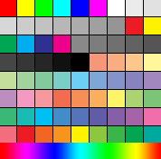

Корни вопроса уходят в те времена, когда очень много устройств отображения поддерживали лишь 256 цветов. В этом случае для отображения остальных цветов применялся приём «dithering» (дизеринг), суть которого в следующем. Представьте, что у вас есть принтер, который печатает только чёрным цветом без оттенков (как матричный). Можем ли мы получить полутон? Можем! За счёт разной плотности размещения точек. Если этих точек очень много, они очень мелкие (и цветные ;)) и мы находимся достаточно далеко, то изображение будет смотреться достаточно естественно. Но всё же при ближайшем рассмотрении оно будет очень неравномерным, и … грязным. Посмотрите на эти изображения. Слева исходное, а справа — с дизерингом:

Если ваш веб-сайт имеет какой-либо цветной фон, то лучше всего для этой цели использовать именно Web Safe цвета. Таким образом, это гарантирует вам, что цвет не будет смущать пользователя при отображении на разных компьютерных платформах. Не стоит забывать и о том, что даже старые компьютеры, которых еще сохранилось достаточно большое количество и все еще активно используются, будут представлять ресурс точно, без колебаний и различий в цветах.
К сожалению, точной инструкции по подбору правильной цветовой палитры, которая бы привлекала, а не отталкивала пользователя, нет. Это субъективное понятие. Однако обратившись к основной «безопасной» палитре вы сможете не сомневаться в том, что каждый точно воспринимает представленный на сайте цвет.
Предлагаем вам ознакомиться с перечнем цветов HTML, который содержит в себе всю «безопасную» палитру и из которого вы сможете выбрать свои варианты оттенков для оформления дизайна.